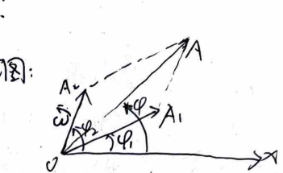
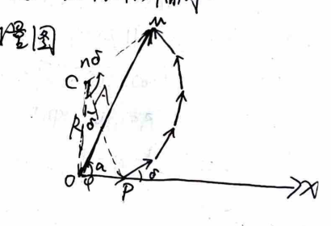
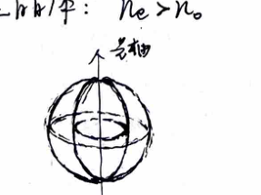
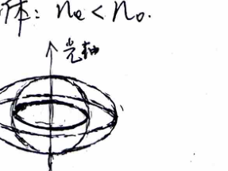
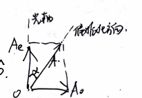
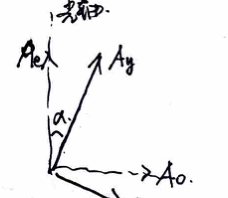

Chapter 4
Optics I & Modern Physics
I. Synthesis of Simple Harmonic Motions on the Same Line
1. Two simple harmonic motions of the same frequency

Given $x_1 = A_1 \cos(\omega t + \varphi_1)$ and $x_2 = A_2 \cos(\omega t + \varphi_2)$, the superposition is $x = x_1 + x_2 = A \cos(\omega t + \varphi)$, where:
$$ \begin{cases} A = \sqrt{A_1^2 + A_2^2 + 2 A_1 A_2 \cos(\varphi_2 - \varphi_1)} \\ \tan\varphi = \frac{A_1 \sin\varphi_1 + A_2 \sin\varphi_2}{A_1 \cos\varphi_1 + A_2 \cos\varphi_2} \end{cases} $$2. $n$ simple harmonic motions of the same frequency

Assume same amplitude and constant phase difference $\delta$:
$$ \begin{aligned} x_1 &= a \cos\omega t \\ x_2 &= a \cos(\omega t + \delta) \\ &\dots \\ x_n &= a \cos[\omega t + (n-1)\delta] \end{aligned} $$From the phasor diagram, the arc corresponds to the synthesized amplitude. Let $R$ be the radius of the circumscribed circle:
$$ A = 2R \sin\frac{n\delta}{2}, \quad a = 2R \sin\frac{\delta}{2} \implies A = a \frac{\sin(n\delta/2)}{\sin(\delta/2)} $$Also, the geometry gives $\angle COM = \frac{1}{2}(\pi - n\delta)$ and $\angle COP = \frac{1}{2}(\pi - \delta)$. The phase angle is:
$$ \varphi = \angle COP - \angle COM = \frac{n-1}{2}\delta $$ $$ \therefore x = a \frac{\sin(n\delta/2)}{\sin(\delta/2)} \cos\left(\omega t + \frac{n-1}{2}\delta\right) $$II. Synthesis of Mutually Perpendicular Simple Harmonic Motions (Same Frequency)
Given $x = A_1 \cos(\omega t + \varphi_1)$ and $y = A_2 \cos(\omega t + \varphi_2)$. Eliminating $t$ yields the trajectory equation:
$$ \frac{x^2}{A_1^2} + \frac{y^2}{A_2^2} - \frac{2xy}{A_1 A_2} \cos(\varphi_2 - \varphi_1) = \sin^2(\varphi_2 - \varphi_1) $$- When $\varphi_2 - \varphi_1 = 0$ or $\pi$, we get $\frac{x}{A_1} \pm \frac{y}{A_2} = 0$, which is a straight line.
- When $\varphi_2 - \varphi_1 = \pm \frac{\pi}{2}$, we get $\frac{x^2}{A_1^2} + \frac{y^2}{A_2^2} = 1$, which is a standard ellipse.
- When $\varphi_2 - \varphi_1$ takes other values, the trajectory is a slanted ellipse.
III. Interference of Light
1. Conditions for Interference
Superposition of waves requires the same vibration direction, same frequency, and constant phase difference. The optical disturbance is described by the electric field vector $\vec{E}(P, t) = \vec{E}_0(P) \cos[\omega t - \varphi(P)]$. In an isotropic medium, it can be represented by a complex scalar $u(P, t) = A(P) e^{-i[\omega t - \varphi(P)]} = u(P) e^{-i\omega t}$.
The light intensity is $I(P) = [A(P)]^2 = |u(P)|^2$. In a linear medium, $u(P) = u_1(P) + u_2(P)$:
$$ I(P) = I_1(P) + I_2(P) + 2\sqrt{I_1(P) I_2(P)} \cos[\varphi_1(P) - \varphi_2(P)] $$If the two amplitudes are equal ($I_1 = I_2 = A^2$), then $I(P) = 4A^2 \cos^2 \frac{\varphi_1 - \varphi_2}{2}$. Fringe visibility is defined as $\gamma = \frac{I_{max} - I_{min}}{I_{max} + I_{min}}$.
2. Temporal Coherence
Reflects the influence of non-monochromaticity on interference fringes. The wave train length (coherence length) is $\delta_{max} = \frac{\lambda^2}{\Delta\lambda}$, where $\Delta\lambda$ is the spectral line width. The coherence time is $\tau = \frac{\delta_{max}}{c}$.
3. Spatial Coherence
Reflects the influence of the light source size on fringes. The fringe spacing is $d_0 = \frac{D}{d} \lambda$. Let $b$ be the light source width, and $R$ be the distance from the primary source to the screen. The coherence aperture is $\theta_0 = \frac{d_0}{R} = \frac{\lambda}{b}$, which is the angle subtended by the fringe spacing at the center of the source. For measuring instruments, the angle subtended by the source at the secondary source point is $\varphi = \frac{b}{R} = \frac{\lambda}{d_0}$.
4. Obtaining Coherent Light
Atomic spontaneous emission consists of discontinuous wave trains, making emissions from different atoms independent. Thus, ordinary light sources produce non-coherent superposition ($\overline{\cos\Delta\varphi} = 0$). To achieve interference, divide the light from the same point on the source into two parts, ensuring they are emitted by the same atom in the same emission event.
5. Wavefront Splitting Method
- Young's double slit: Path difference $\delta \approx d \sin\theta$.
Constructive: $d \sin\theta = k\lambda$. Destructive: $d \sin\theta = (2k-1)\frac{\lambda}{2}$.
Fringe spacing $\Delta x = \frac{D}{d}\lambda$, angular separation $\Delta\theta = \frac{\lambda}{d \cos\theta}$. - Fresnel biprism
- Lloyd's mirror: The central fringe is dark due to a half-wave loss (reflection from optically thinner to denser medium).
6. Amplitude Splitting Method
- Wedge-shaped equal thickness fringes: Path difference $\delta = 2nh + \frac{\lambda}{2}$.
Constructive: $\delta = k\lambda$. Destructive: $\delta = (2k+1)\frac{\lambda}{2}$.
Fringe spacing $\Delta x = \frac{\lambda}{2n\theta}$, thickness difference between fringes $\Delta h = \frac{\lambda}{2n}$. - Newton's rings: Equal thickness fringes with $\delta = 2h + \frac{\lambda}{2}$. Using $r^2 \approx 2Rh$:
Constructive radius: $r = \sqrt{\frac{(2k-1)R\lambda}{2}}$. Destructive radius: $r = \sqrt{kR\lambda}$.
Difference of squared radii: $\Delta r^2 = R\lambda$. - Thin film equal inclination fringes: Path difference $\delta = 2h\sqrt{n^2 - \sin^2 i} + \frac{\lambda}{2} = 2nh \cos r + \frac{\lambda}{2}$.
Fringes of transmitted and reflected light are complementary. - Anti-reflective coating: Reflected light destructive $2n_c h = (2k-1)\frac{\lambda}{2} \implies h_{min} = \frac{\lambda}{4n_c}$.
Highly reflective coating: Reflected light constructive $2n_c h = k\lambda \implies h_{min} = \frac{\lambda}{2n_c}$ (requires $n_0 < n_c < n$). - Michelson interferometer:
Equal inclination: Mirrors $M_1, M_2'$ strictly perpendicular (parallel air film).
Equal thickness: Mirrors $M_1, M_2'$ slightly tilted (air wedge).
IV. Diffraction of Light
1. Huygens-Fresnel Principle
Interference is the superposition of discrete beams, whereas diffraction is the continuous superposition of infinite secondary waves from a wavefront.
2. Far-field (Fraunhofer) Diffraction
- Single Slit: Divide the wavefront into $N$ equal zones. Using the synthesis of $N$ simple harmonic motions: $$ I_\theta = I_0 \left(\frac{\sin\beta}{\beta}\right)^2, \quad \text{where } \beta = \frac{\pi a \sin\theta}{\lambda} $$ Using the half-period zone method, dark fringes occur at $a \sin\theta = k\lambda$, and the central bright fringe width is $\Delta x = \frac{2f\lambda}{a}$.
- Circular Aperture: The first minimum occurs at $\sin\theta = 1.22 \frac{\lambda}{D}$. The Rayleigh criterion for resolving power is $\delta\theta = 1.22 \frac{\lambda}{D}$. Large diameter objective lenses (telescopes) or short wavelength light (electron microscopes) increase resolving power.
- Grating (N slits): The intensity distribution is:
$$ I_\theta = I_0 \left(\frac{\sin\beta}{\beta}\right)^2 \left(\frac{\sin N\gamma}{\sin\gamma}\right)^2, \quad \gamma = \frac{\pi d \sin\theta}{\lambda} $$
- Principal maxima: $d \sin\theta = k\lambda$. Intensity is $N^2 I_0$.
- Dark fringes: $Nd \sin\theta = k'\lambda$ (where $k'$ is not a multiple of $N$). Between two principal maxima, there are $N-1$ dark fringes and $N-2$ secondary maxima.
- Missing orders: Occur when $k = \pm \frac{d}{a} k''$.
- 3D Grating (X-ray diffraction): Bragg's law $\delta = 2d \sin\varphi$. Used in Laue method (continuous spectrum on single crystal) and Debye-Scherrer method (monochromatic X-ray on polycrystalline powder).
V. Polarization of Light
1. Polarization States
- Natural light: Isotropic transverse vibrations. Intensity after a polarizer is $\frac{1}{2} I_0$.
- Linearly polarized light: Follows Malus's law $I_\theta = I_0 \cos^2\theta$. Obtained via dichroism, crystal prisms, reflection at Brewster angle, or a pile of plates.
- Circularly/Elliptically polarized light: $\frac{x^2}{A_x^2} + \frac{y^2}{A_y^2} - \frac{2xy}{A_x A_y} \cos\varphi = \sin^2\varphi$.
2. Polarization during Reflection and Refraction
At the Brewster angle ($i_0 + r = 90^\circ \implies \tan i_0 = n_2/n_1$), reflected light is completely linearly polarized perpendicular to the plane of incidence.
3. Birefringence Phenomenon
- Positive crystal: $n_e > n_o$. The o-wave surface is a sphere enclosing the e-wave ellipsoid.
- Negative crystal: $n_e < n_o$. The e-wave surface is an ellipsoid enclosing the o-wave sphere.


4. Passing through a Waveplate
A waveplate introduces a phase difference $\Delta\varphi = \frac{2\pi}{\lambda}(n_o - n_e)d$ between the o-ray and e-ray.
- If linearly polarized light is incident, it generally becomes elliptically polarized light upon exiting.
- If elliptically polarized light is incident, it can be projected onto the optical axis and remains elliptically polarized after passing through.
- Natural light remains natural light.


5. Testing Polarized Light
First, observe transmission through a rotating polarizer. If intensity is constant, it's natural or circularly polarized; if it varies but doesn't extinguish, it's partially or elliptically polarized; if it extinguishes, it's linearly polarized. To distinguish further, insert a quarter-waveplate before the polarizer.
6. Rotatory Polarization
Optically active substances rotate the plane of polarization. The rotation angle is $\theta = \frac{\pi}{\lambda} (n_L - n_R) l$. Specific rotation $\alpha = \theta/l$.
VI. Particle Nature of Radiation
1. Blackbody Radiation
Thermal radiation energy density $u(T) = \int u(\nu, T) d\nu$. Spectral radiant emittance is $r_0(\nu, T) = \frac{1}{4} c u(\nu, T)$.
Planck's law models the density of photon states in a 3D box, yielding the number of states per unit volume per unit frequency as $n_0(\nu) = \frac{8\pi\nu^2}{c^3}$. Using Boltzmann statistics for photon energies $\varepsilon = nh\nu$, the average energy is $\bar{\varepsilon} = \frac{h\nu}{e^{h\nu/kT} - 1}$.
The energy spectral density is $u(\nu, T) = n_0(\nu) \bar{\varepsilon} = \frac{8\pi\nu^2}{c^3} \frac{h\nu}{e^{h\nu/kT} - 1}$. Total emittance is $R_0(T) = \sigma T^4$ (Stefan-Boltzmann), and the peak wavelength is $\lambda_m = b/T$ (Wien's displacement).
2. Photoelectric & Compton Effects
- Photoelectric effect: Energy conservation $h\nu = A + \frac{1}{2}mv^2$. Stopping potential $e U_0 = \frac{1}{2}mv_{max}^2$.
- Compton effect: Photon-electron energy and momentum conservation. Wavelength shift $\Delta\lambda = \frac{h}{m_0 c}(1 - \cos\varphi)$.
VII. Fundamentals of Quantum Mechanics
1. Wavefunction & Born Statistical Interpretation
Probability density: $|\Psi(\vec{r}, t)|^2$. Normalization: $\int |\Psi|^2 dV = 1$. The wavefunction must be single-valued, finite, and continuous. Follows the superposition principle.
2. Mechanical Quantities and Operators
Physical observables correspond to Hermitian operators satisfying $\hat{F}\Psi = \lambda\Psi$.
- Coordinate: $\hat{\vec{r}} = \vec{r}$.
- Momentum: $\hat{\vec{p}} = -i\hbar\nabla$.
- Orbital angular momentum: $\hat{\vec{L}} = \hat{\vec{r}} \times \hat{\vec{p}}$. Eigenvalues of $\hat{L}^2$ are $l(l+1)\hbar^2$, and for $\hat{L}_z$ are $m_l\hbar$.
- Hamiltonian (Energy): $\hat{H} = \frac{\hat{p}^2}{2m} + U(\vec{r}) = -\frac{\hbar^2}{2m}\nabla^2 + U(\vec{r})$.
3. Eigenfunction Properties
Eigenfunctions are orthogonal and form a complete set. The average value is $\bar{F} = \int \Psi^* \hat{F} \Psi dx$. Non-commuting operators share an uncertainty relation, e.g., $\Delta x \cdot \Delta p_x \ge \frac{\hbar}{2}$, while commuting operators (like $\hat{L}^2$ and $\hat{L}_z$) can have zero uncertainty product.
4. Schrödinger Equation
$i\hbar \frac{\partial}{\partial t}\Psi(\vec{r}, t) = \hat{H} \Psi(\vec{r}, t)$. For stationary states, $\Psi(\vec{r}, t) = \phi(\vec{r}) e^{-i\frac{E}{\hbar}t}$.
VIII. Atomic Models
1. Hydrogen Atom
Solving the Schrödinger equation in a Coulomb field yields energy levels $E_n = -\frac{m_e e^4}{2(4\pi\varepsilon_0)^2 \hbar^2} \frac{1}{n^2}$. The wavefunction involves radial $R_{nl}(r)$ and spherical harmonics $Y_{lm}(\theta, \varphi)$.
2. Electron Spin and Spin-Orbit Coupling
Total angular momentum $\vec{J} = \vec{L} + \vec{S}$. Spin magnetic moment $\mu_{sz} = \pm \mu_B$. In an external magnetic field, $E_S = \mp \mu_B B$. The Stern-Gerlach experiment separates silver atoms based on the force $F_m = \pm \mu_B \frac{\partial B}{\partial z}$, proving space quantization of spin.
3. Alkali Metal Energy Levels
Due to orbit penetration and atomic core polarization, the energy levels are modified by a quantum defect $\Delta_{nl}$: $E_{nl} = \frac{-13.6 \text{eV}}{(n - \Delta_{nl})^2}$. Including spin, the fine structure levels are determined by quantum numbers $n, l, j, m_j$. Under a magnetic field, $E = E_{nlj} + m_j \mu_B B$.